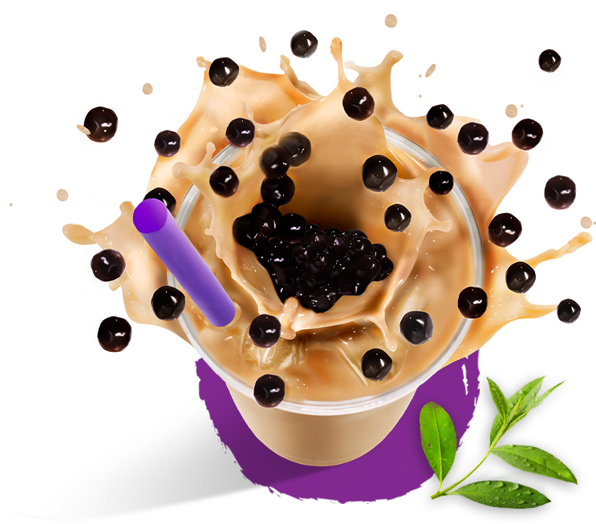
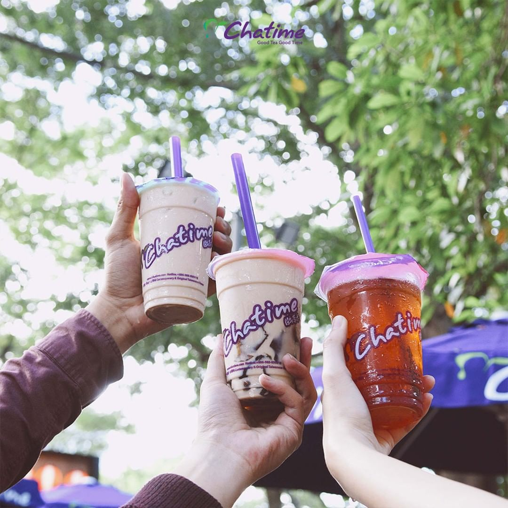
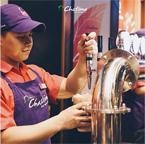

Chatime merupakan penyedia minuman brewed tea asal Taiwan yang menghadirkan lebih dari 50 varian rasa. Di Indonesia, Chatime merupakan bagian dari F&B Indonesia, induk perusahaan yang sejak tahun 2011 menaungi seluruh portofolio pilar bisnis food & beverage Kawan Lama Group.



Pilihan Minuman
Chatime Indonesia hadir dengan enam kategori minuman yang dapat dinikmati oleh segala usia. Terdiri dari: